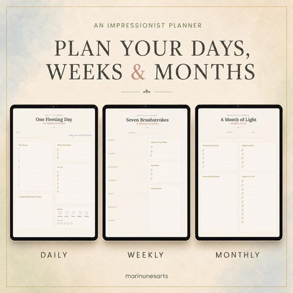
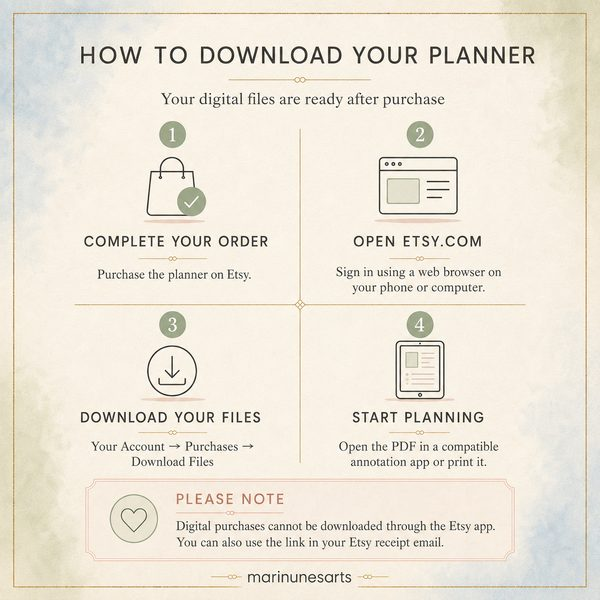
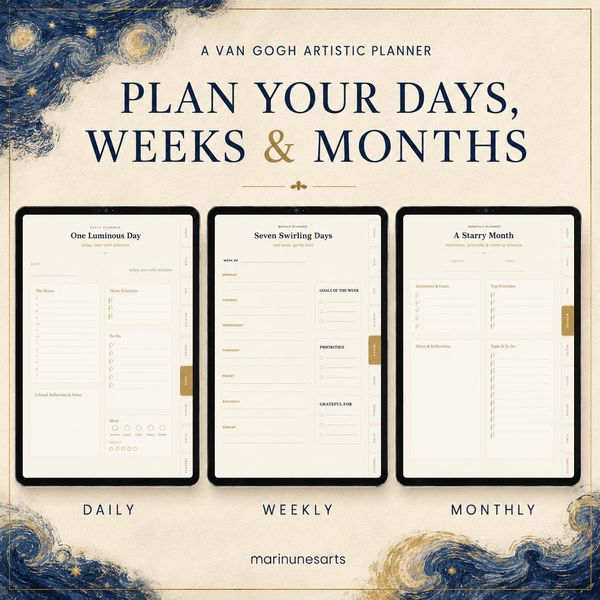

Como usar planner digital: guia para organizar sua rotina
Do download à primeira semana planejada: como funciona um planner digital, como organizar mês, semana e dia e como manter o hábito.

Um planner digital é uma agenda em forma de arquivo, geralmente um PDF, que você abre em um app de anotações e preenche com uma caneta digital ou com o teclado. Ele reúne as páginas de um planner de papel, como calendário mensal, planejamento semanal e listas, com uma vantagem: abas e links clicáveis que levam direto a cada seção.
Se você nunca usou um, este guia explica como funciona um planner digital, o que é preciso para começar, como organizar o mês, a semana e o dia e em que ele se diferencia do planner de papel.
Em resumo
- Um planner digital é um PDF com páginas de planejamento e links internos, usado em apps de anotações.
- Para começar, você precisa do arquivo, de um app que abra PDF com links e, de preferência, de um tablet com caneta.
- Planners sem data podem começar em qualquer mês e ser usados em qualquer ano.
- O que mantém o hábito é um ritual curto de revisão, e não preencher todas as páginas.
Como funciona um planner digital
Na prática, o planner digital é um documento com dezenas de páginas organizadas por seção. O que o diferencia de um PDF comum são os hiperlinks: ao tocar em uma aba, como “mês”, “semana” ou “notas”, você vai direto para aquela página, sem precisar rolar o arquivo inteiro.
Você escreve sobre as páginas com as ferramentas do seu app de anotações, como caneta, marca-texto e borracha. Como tudo fica no arquivo, dá para apagar sem deixar marcas, mudar uma tarefa de dia e manter o planner organizado.
Alguns planners trazem recursos extras. Nos planners da Mari Nunes Arts, por exemplo, além das abas clicáveis, há links para criar eventos no Google Agenda e na agenda da Apple, o que ajuda a transformar um compromisso anotado em um lembrete.
Planner digital sem data
Planners sem data trazem as páginas de mês, semana e dia sem os dias preenchidos. Você escreve as datas e pode começar em qualquer época do ano, sem desperdiçar páginas de meses que já passaram. Os planners Luminous Days e En Plein Air são sem data, para usar em qualquer ano.
O que você precisa para começar
- O arquivo do planner, normalmente em PDF.
- Um app de anotações que abra PDF com links. As páginas dos planners da Mari Nunes Arts citam, por exemplo, Goodnotes, Notability, Noteshelf e Xodo. Antes de comprar, confira se o app que você pretende usar está disponível para o seu aparelho.
- Um tablet com caneta digital, que é a forma mais confortável de usar um planner digital para tablet, porque permite escrever à mão.
- Impressora, se você preferir o papel. Alguns planners também podem ser impressos. O En Plein Air, por exemplo, é um PDF para usar no tablet ou imprimir.
Passo a passo: como usar um planner digital
- Baixe o arquivo. Nos planners vendidos pela Etsy, o download é feito pelo site da Etsy, no navegador do celular ou do computador, na área de compras da sua conta. Segundo o guia que acompanha os planners da Mari Nunes Arts, compras digitais não podem ser baixadas pelo app da Etsy; também é possível usar o link do e-mail de recibo.
- Abra o PDF no seu app de anotações. Em geral, basta abrir o arquivo e escolher o app ou usar a opção de importar dentro do próprio app.
- Explore as abas. Antes de escrever, toque em cada aba para entender como o planner está organizado.
- Duplique as páginas que vai usar mais. Em um planner sem data, você pode duplicar páginas de semana ou de notas sempre que precisar.
- Preencha o primeiro mês. Comece pelo mês atual: anote datas importantes, compromissos fixos e metas.
- Use os links de agenda. Crie eventos e lembretes para os compromissos que não podem ser esquecidos.

Como organizar a rotina com um planner digital
A organização com planner digital funciona melhor quando cada tipo de página tem uma função clara. Uma forma simples de dividir:
Mês: a visão geral
Use a página mensal para o que é fixo e importante: aniversários, contas, viagens, prazos e duas ou três metas para o mês. Ela é o mapa e não precisa de detalhes.
Semana: o planejamento de verdade
É na página semanal que o mês vira ação. Distribua as tarefas pelos dias, considerando os compromissos que já existem, e escolha as prioridades da semana. Um bom momento para isso é o fim de semana ou a primeira manhã da semana.
Dia: foco e ajustes
A página diária serve para os dias mais cheios: liste as três tarefas mais importantes, os horários e o que precisa ser lembrado. Em dias tranquilos, a página semanal pode bastar.

Listas, registros e o que faz bem
Além do calendário, muitos planners trazem páginas de metas, listas de tarefas e registros. O En Plein Air, por exemplo, tem metas, prioridades, listas de tarefas e registro de humor e energia, e os dois planners da Mari Nunes Arts trazem diários de leitura e de cinema. Essas páginas fazem do planner um lugar para acompanhar também o que inspira, e não só as obrigações.
Planner digital ou planner de papel?
Os dois funcionam, e a melhor escolha depende do seu jeito de se organizar. Uma comparação honesta:
| Aspecto | Planner digital | Planner de papel |
|---|---|---|
| Onde fica | No tablet, junto com outros arquivos | Em um caderno físico, para levar na bolsa |
| Correções | Apaga sem deixar marcas e permite mover conteúdo | Rasuras ficam no papel |
| Páginas | Dá para duplicar as que você mais usa | Quantidade fixa |
| Lembretes | Pode ter links para criar eventos na agenda | Depende de você conferir |
| Escrita | Na tela, com caneta digital | No papel, com qualquer caneta |
| O que é preciso | Aparelho com bateria e um app de anotações | Só o caderno e uma caneta |
Se você gosta da sensação do papel, mas quer a flexibilidade do digital, uma alternativa é imprimir só algumas páginas, desde que o planner permita.
Dicas para não abandonar o planner
- Deixe o planner ao alcance. Se ele está no tablet que você usa todo dia, fica mais fácil abrir.
- Trate o planner como aliado, não como obrigação. Ele não precisa estar bonito nem completo para funcionar.
- Faça uma revisão rápida no fim do dia. Cinco minutos para ver o que foi feito e anotar o dia seguinte criam um ritmo.
- Comece com poucas seções. Use mês e semana por algumas semanas antes de acrescentar listas e registros.
- Personalize aos poucos. Cores, marcações e adesivos digitais deixam o planner com a sua cara. O En Plein Air, por exemplo, traz uma folha de adesivos digitais de brinde.
Arte na rotina: os planners da Mari Nunes Arts
Os planners digitais da Mari Nunes Arts unem organização e história da arte:
- Luminous Days, inspirado em Van Gogh: 71 páginas sem data, com planejamento diário, semanal e mensal, diários de leitura e de cinema e seis encontros guiados com obras do pintor. Arquivo em inglês.
- En Plein Air, inspirado na pintura impressionista: 76 páginas sem data, em inglês, espanhol e português, com planejamento, metas, registro de humor, páginas de observação de obras e uma folha de adesivos digitais.
Para conhecer as referências por trás deles, leia também o que é impressionismo.
Comece pela próxima semana
Você não precisa planejar o ano inteiro hoje. Abra o planner, preencha o mês atual e organize a próxima semana. Se essa rotina de poucos minutos se mantiver por um mês, o planner terá cumprido o seu papel.